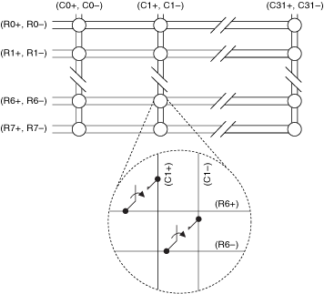
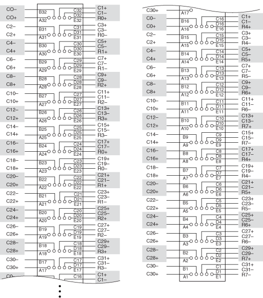

The following figure represents the NI PXIe-2738 (NI 2738) in the 2-wire 8×32 matrix topology.
|  |
|
The NI 2738 is an 8×32 matrix. In this topology you can connect any row to any column. In software, R0 refers to the R0+ and R0– pair. All other channels follow a similar naming scheme.
You can connect the channels of the NI 2738 using the niSwitch Connect Channels VI or the niSwitch_Connect function. For example, to connect row 1 to column 1, call the niSwitch Connect Channels VI or the niSwitch_Connect function with the channel 1 parameter set to r1 and the channel 2 parameter set to c1, or vice versa.
The following figure identifies the pins for the NI 2738.
